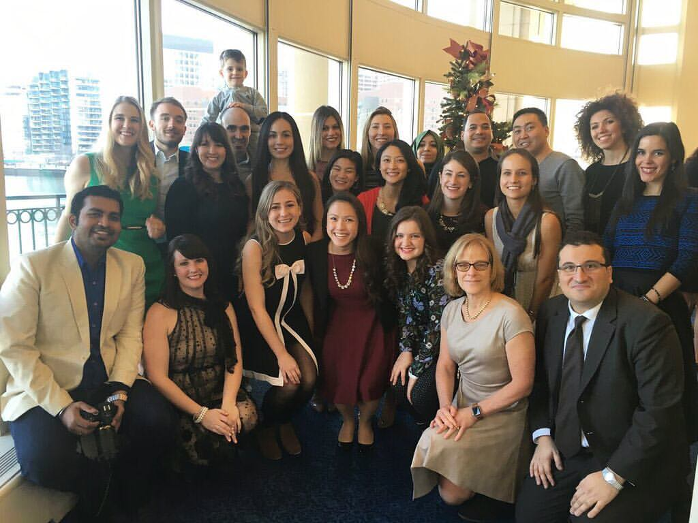

<!--
@license
Copyright (c) 2016 The Polymer Project Authors. All rights reserved.
This code may only be used under the BSD style license found at http://polymer.github.io/LICENSE.txt
The complete set of authors may be found at http://polymer.github.io/AUTHORS.txt
The complete set of contributors may be found at http://polymer.github.io/CONTRIBUTORS.txt
Code distributed by Google as part of the polymer project is also
subject to an additional IP rights grant found at http://polymer.github.io/PATENTS.txt
-->

<link rel="import" href="../../bower_components/polymer/polymer.html">

<link rel="import" href="../common-element/toc-behavior.html">
<link rel="import" href="../common-element/footer-element.html">
<link rel="import" href="../common-element/member-card-element.html">

<link rel="import" href="../common-element/common-styles.html">

<dom-module id="fnndsc-news">
  <template>
    <style include="common-styles"></style>
    <style>
      :host {
        display: block;
      }
    </style>

    <article>
      <header class="center">
        <h1>News</h1>
        <h1>At FNNDSC</h1>
      </header>

      <nav>
        <div>Contents</div>
        <ul>
          <li><a href="#about" label="about" on-tap="__scrollTo">About</a></li>
        </ul>
      </nav>

      <main>

        <section>
          <h2 id="about" class="maxflow" class="maxflow">About</h2>

          <p>At the moment all internships are full, please check back here soon.<p>
          <p>This was a Christmas Party in 2016 for the FNNDSC team<p>
          <div class="imageContainer maxflow">
            <div style="height: 500px">
                 
            </div>
            </section>
         
        
      </main>

      <footer-element></footer-element>
    
    </article>

  </template>

  <script>
    Polymer({
      is: 'fnndsc-news',
      behaviors: [TOCBehavior],
    });
  </script>
</dom-module>
